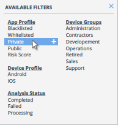
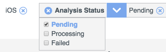

Use the Filter box at the top of a main section to filter your results by selected criteria. Click inside the box and either enter text or select predefined filters. The list will update to display objects that match your filter criteria.
Apply filters using either of these methods:
To accept a suggestion in the search results, click Enter.
Click a filter in the list to apply it. It will be removed from the list of options.

Additional Filter Actions
